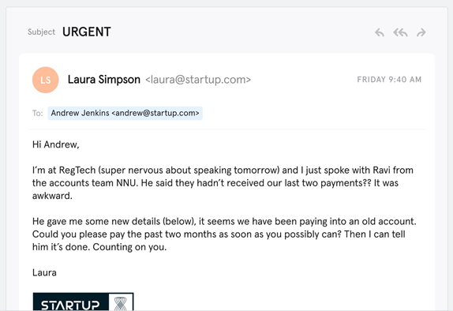
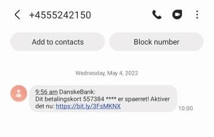

Welcome, anonymous!
Would you like to know why you are here?
Because nowadays, the internet and the technologies have become an inseparable part of our lifes...
but that doesn't mean that they are safe.
Sometimes clicking on an suspicious link, button, or downloading a file might be enough to bring financial disasters or even worse...
Phishing is among the biggest cyber threats facing organizations and individuals. One of the most frustrating things about this is that most people know what phishing is and how it works, but many still get caught out.
Phishing still has the same objective – to steal our personal data or infect our devices – but there are now countless ways to do that.
We will look at 5 of the most common types of phishing to help you spot the signs of a scam.
Email phishing
Most phishing attacks are sent by email. The crook will register a fake domain that mimics a genuine organization and sends thousands of generic requests.
The fake domain often involves character substitution, like using ‘r’ and ‘n’ next to each other to create ‘rn’ instead of ‘m’.
In other cases, the fraudsters create a unique domain that includes the legitimate organization’s name in the URL.
The recipient might see the word "Microsoft" in the sender’s address and assume that it was a genuine email.
There are many ways to spot a phishing email, but as a general rule, you should always check the email address of a message that asks you to click a link or download an attachment.
Spear phishing
Spear phishing describes malicious emails sent to a specific person. Criminals who do this will already have some or all of the basic information about the victim.
You can see in the example how much more convincing spear phishing emails are compared to standard scams.
The fraudster has the wherewithal to address the individual by name and (presumably) knows that their job role involves making bank transfers on behalf of the company.
The informality of the email also suggests that the sender is a native English speaker, and creates the sense that this is a real message rather than a template.
Angler phishing
A relatively new attack vector, social media offers several ways for criminals to trick people. Fake URLs; cloned websites, posts, and tweets; and instant messaging can all be used to persuade people to divulge sensitive information or download malware.
Alternatively, criminals can use the data that people willingly post on social media to create highly targeted attacks.
As this example demonstrates, angler phishing is often made possible due to the number of people containing organisations directly on social media with complaints.
Organisations often use these as an opportunity to mitigate the damage – usually by giving the individual a refund.
However, scammers are adept at hijacking responses and asking the customer to provide their personal details. They are seemingly doing this to facilitate some form of compensation, but it is instead done to compromise their accounts.
Whaling
Whaling attacks are even more targeted, taking aim at senior executives. Although the end goal of whaling is the same as any other kind of phishing attack, the technique tends to be a lot subtler.
Tricks such as fake links and malicious URLs aren’t helpful in this instance, as criminals are attempting to imitate senior staff.
Whaling emails also commonly use the pretext of a busy CEO who wants an employee to do them a favour.
Emails such as this might not be as sophisticated as spear phishing emails, but they play on employees’ willingness to follow instructions from their boss. Recipients might suspect that something is amiss but are too afraid to confront the sender to suggest that they are being unprofessional.
Smishing & Vishing
With both smishing and vishing, telephones replace emails as the method of communication.
Smishing involves criminals sending text messages (the content of which is much the same as with email phishing), and vishing involves a telephone conversation.
One of the most common smishing pretexts are messages supposedly from your bank alerting you to suspicious activity.
In this example, the message suggests that you have been the victim of fraud and tells you to follow a link to prevent further damage.
However, the link directs the recipient to a website controlled by the fraudster and designed to capture your banking details.
Organisations can mitigate the risk of phishing with technological means, such as spam filters, but these have consistently proven to be unreliable.
Stay vigilant!